Categories: Control Groups Measure Movement Pen Secret Number Sensors Turtles
Special Units: Ants
call group
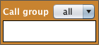
This command specifies which turtles will follow your commands. You can command all turtles. To command only some of your turtles, you must create a group using the Groups menu option: Go to Groups, then Create Group.
change shape to

Use the drop down menu to choose a shape. The agent will change its shape to the option you select.
change turtle attribute

Change an attribute of a turtle to another value.
Use the the first drop down menu to select step-size, heading, color, pen-width, or secret-number . From the second drop down menu, choose plus, minus, equal to, or random up to. Enter a numeric value into the field. For example, if step-size was currently 1, and you executed the following command: change step-size plus 4, the turtle's updated step-size would be 5.
clear measure points
Removes all measure points that have been placed in the world by .
face

The turtle, or turtles in the group, will change their heading to face (or point towards) the xy coordinates. Enter the x-coordinate in the first field and the y-coordinate in the second field.
face chemical
Points the turtle in the direction of the closest chemical.
face nest
Points the ant in the direction of the nest.
forward sensor
The turtles move forward with a step-size the magnitude of the current sensor reading.
go backward
Moves the turtle in the direction that is opposite the direction that it is pointing, but does not change the heading.
You must set the step-size with  or the turtle will not move.
or the turtle will not move.
go forward

Turtles in the group will move in the direction of their heading. You must set the step-size with or the turtle will not move.
go forward sum
Compute the sum of the two numbers and the go forward the computed distance.
go invisible

This command hides the turtle. Even though you cannot see the turtle, it is still executing the commands.
go visible

This commands makes the turtle visible in the world.
i don't have food

Tells the ant that it does not have any food. If the ant is asked later in the program it will report that it has no food.
i have food
Tells the ant that it currently has food. If the ant is asked later in the program it will report that it has food.
if-then-otherwise
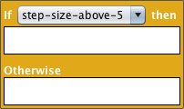
Creates a condition. Put commands inside the blank spaces to create an if-then-otherwise statement. For example, if step-size-above-5, then change color equal to 15 and go forward. Otherwise, just go forward.
left turn

Turns the turtle or turtles left by the number of degrees you put in the field. For example, if the heading is 100 and you turn left 60, the new heading will be 40. It is the opposite command to 
left turn sensor
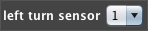
The turtles turn left by the magnitude of the current sensor reading.
pen down

Leaves a pen-trail wherever the turtle travels in the world.
pen up

The turtle will no longer leave a pen-trail but pen marks that were made before this command executes will still be visible.
pen width

The turtles will set their pen-width to the number you enter in the field. The default pen width is 1. This command must be used along with 
pick a secret number less than

Chooses a random number greater than or equal to 0, but less than number.
pick a secret number range

Chooses a random number in between the two numbers that are entered in the fields, inclusive of the numbers.
place chemical

Similar to the  command, but instead of putting down an imprint of itself, the ant places some invisible chemical in the world at its current location. The chemical can be detected by other ants.
command, but instead of putting down an imprint of itself, the ant places some invisible chemical in the world at its current location. The chemical can be detected by other ants.
place measure point
Places a flag in the world where the turtle currently is located. The measure point also stores information about the turtle at that point that can be shown in the graphs.
The measure points are read by the graphing tools in ViMAP. This command can be undone by .
random turn
First, the turtle chooses a random number between 1 and number. Next the turtle turns either right or left from where it is pointed by that number of degrees.
remove food here

Ant will try to pick up food. If it is standing on top of food will be true.
repeat block
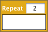
Repeats all the command blocks inside the repeat block. Enter the number of times you want the commands to execute in the field.
reset forward values
Resets the step-size of the turtle, or, of all turtles in the group, to zero.
right turn
Turns the turtle or turtles right by the number of degrees you put in the field. For example, if the heading is 100 and you turn right 60, the new heading will be 160. It is the opposite command to
right turn using sensor
The turtles turn right by the magnitude of the current sensor reading.
set by sensor
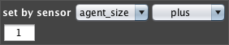
The turtles set a one of their attributes based on an operation on the sensor reading. Choose agent-size, pen-width, color, step-size, or heading from the first drop down menu, and a operation (plus, minus, times, or divided by) from the second. In the field, enter a number. For example, if you want the pen-width of the agent to vary with the sensor reading, you could use: Set by sensor pen-size times 1.
set by sensor and math

Sets an attribute of a turtle to another value based on measurements in your model.
Use the the first drop down menu to select size, pen-width, or color. From the second drop down menu, choose odometer, step-size, or change in step-size. In the third drop down, choose times or divided by. Enter a numeric value into the field. For example, if you wish for the size of your turtle to co-vary with it's speed, you could Set size step-size times 1 .
set color

The turtles will set their color to the NetLogo color number you enter in the field. Use the dropdowns to select color and equal to a number that is entered into the field.

"NetLogo Color Chart", Source: http://ccl.northwestern.edu/netlogo/
Base colors are any color that ends in 5. Note that the color of the agent is also the color that will be left by using
set color by sensor
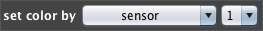
Asks the turtle to set its color to a new value based on the sensor reading of sensor 1 or sensor 2.
set color to secret number

The turtle sets the color to the value of the secret number, based on the NetLogo color chart.
"NetLogo Color Chart", Source: http://ccl.northwestern.edu/netlogo/
set heading
Enter a number in the field. The turtle or turtles will set their direction of travel to that polar coordinate. In ViMAP, a heading of 0 makes the turtle point in the direction of the top-center of the world, 90 is to the right, 180 is toward the bottom-center of the world, and 270 is to the left.
set heading to secret number

The turtle chooses a random number between 0 and 360 and then sets its heading to that number.
set label
Choose from the dropdown menu which attribute the turtle displays as a label. Now next to the turtle, a small, black, numeric label is visible and it displays the current value.
set random heading
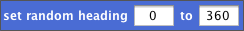
Set the turtle's heading, to a random number.
Enter any two angles to set the limits. The random angle will be greater than or equal to field1 but less than or equal to field2.
set shape

Use the drop down menu to choose a shape. The agents will change their shape to the option you select.
set step-size
Sets the step-size of the turtle or turtles to the number you put in the field. For example, a step-size of 50 is five times as large as a step-size of 10. This command is always used with a
set step-size minus
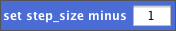
Set step-size for the turtle, equal to the current step-size minus a number you enter. For example, if the step-size was 10, and you set step-size minus 2 , the updated step-size will be 8. Does not allow step-sizes less than 0.
set step-size minus a sensor reading
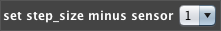
Asks the turtle to set its step-size to a new value. The new step-size will be difference between the old step-size and the value of the sensor 1 reading or the sensor 2 reading.
set step-size plus
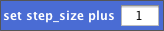
Set step-size for the turtle, equal to the current step-size plus a number you enter. For example, if the step-size was 10, and you set step-size plus 2, the updated step-size will be 12.
set step-size plus a sensor reading
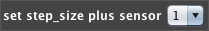
Asks the turtle to set its step-size to a new value. The new step-size will be sum of the old step-size and the value of the sensor 1 reading or the sensor 2 reading.
set step-size to secret number

Set the turtle's step-size equal to the secret number.
set turtle attribute using sensor

Sets an attribute of a turtle to a value matching the sensor reading.
Use the the first drop down menu to select pen-width, color, heading, or step-size. Specify the sensor to be used using the second drop down menu. For example,you may ask the turtle to set its pen-width to the magnitude of the sensor reading by choosing set pen-width sensor-1.
set turtle attribute using sensor and math
Sets an attribute of a turtle to another value based on an operation on the sensor reading.
Use the the first drop down menu to select pen-width, color, heading, or step-size. Specify the sensor to be used using the second drop down menu. Choose an operation in the third, and in the fourth field, enter a number. For example, you may ask the turtle to set its pen-width to one-half the magnitude of the sensor reading by choosing set pen-width sensor-1 divided-by 2.
set xy
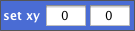
Sets the position of the turtle or turtles to the x and y coordinates you specify. To find out the coordinates for any point in the enactment world, secondary click (or right click) to get a report of the x and y coordinates for that position. Enter the x-coordinate in the first field, and the y-coordinate in the second.
stamp
Stamp an outline of the turtle onto the background.
start measuring
The turtle resets all its measurements to zero. All previously placed measure flags are not removed and will display their proper values. Each time the turtle receives the command, it starts to measure again from scratch.
step-size minus secret number

Set the turtle's step-size equal to the current step-size minus the secret number.
step-size plus secret number

Set the turtle's step-size equal to the current step-size plus the secret number.
turn left by secret number

The turtle turns left by the magnitude of the secret number. For example, if the assigned secret number is 30, the turtle will turn left 30 degrees.
turn right by secret number

The turtle turns right by the magnitude of the secret number. For example, if the assigned secret number is 30, the turtle will turn right 30 degrees.
update group ellipse
This command updates which turtles are members of the group. Use this command in the setup code, before you ask the members of the groups to follow any commands.
The drop down menu lets you choose which group to update.
Any turtles in the elliptical group you have chosen will become members of the group. All other turtles will not be in the group.
update group rectangle
This command updates which turtles are members of the group. Use this command in the setup code, before you ask the members of the groups to follow any commands.
The drop down menu lets you choose which group to update.
Any turtles in the rectangular group you have chosen will become members of the group. All other turtles will not be in the group.
x minus a sensor reading
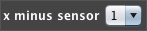
Asks the turtle to set its x-coordinate equal to the original x-coordinate, minus the reading of sensor 1 or sensor 2. To find out the coordinates for any point in the enactment world, secondary click (or right click) to get a report of the x and y coordinates for that position.
x plus a sensor reading
Asks the turtle to set its x-coordinate equal to the original x-coordinate, plus the reading of sensor 1 or sensor 2. To find out the coordinates for any point in the enactment world, secondary click (or right click) to get a report of the x and y coordinates for that position.
y minus a sensor reading
Asks the turtle to set its y-coordinate equal to the original y-coordinate, minus the reading of sensor 1 or sensor 2. To find out the coordinates for any point in the enactment world, secondary click (or right click) to get a report of the x and y coordinates for that position.
y plus a sensor reading
Asks the turtle to set its y-coordinate equal to the original y-coordinate, plus the reading of sensor 1 or sensor 2. To find out the coordinates for any point in the enactment world, secondary click (or right click) to get a report of the x and y coordinates for that position.